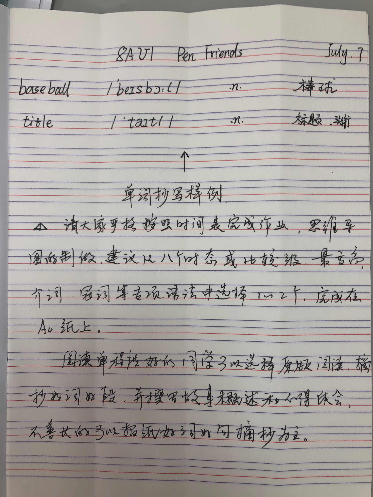

暑期英语作业时间规划表
|
英语 |
|
|
作业内容 |
完成截止时间 |
|
芝士网作业1+暑假生活英语+8AU1单词表朗读与抄默+ 假期自我测试1+阅读笔记1 |
7 月 10 日 |
|
暑假生活英语+8AU2单词表朗读与抄默+假期自我测试 2+阅读笔记2 |
7 月 17 日 |
|
芝士网作业2+暑假生活英语+8AU3单词表朗读与抄默+ 假期自我测试3+阅读笔记3 |
7 月 24 日 |
|
暑假生活英语+8AU4单词表朗读与抄默+假期自我测试 4+阅读笔记4 |
7 月 31 日 |
|
芝士网作业3+暑假生活英语+8AU5单词表朗读与抄默+ 假期自我测试5+语法思维导图1 |
8 月 7 日 |
|
暑假生活英语+8AU6单词表朗读与抄默+假期自我测试 6+语法思维导图2 |
8 月 14 日 |
|
芝士网作业4+暑假生活英语+8AU7单词表朗读与抄默+ 语法思维导图3（语法思维导图3选做） |
8 月 21 日 |
|
检查之前的作业完成情况，查漏补缺，语法思维导图 4/5/6……N（语法思维导图4/5/6……N选做） |
8 月 28 日 |
注意事项：请同学们严格按照计划表完成作业，老师会定期在晓黑板发布答案、答疑
和收作业！加油！努力的少年前途无量
